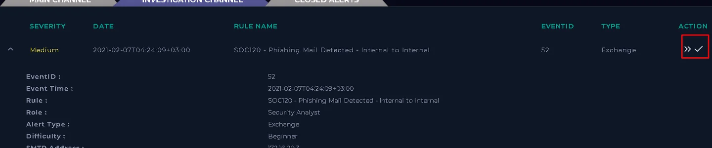
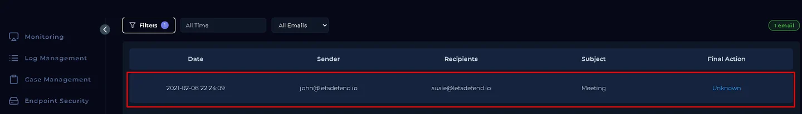
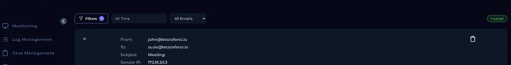

SOC120 · Phishing Mail Detected: Internal to Internal
- Categoria
- Phishing
- Caso
- SOC120
- Registro
- Falso positivo
Resumo
Alerta de suposto phishing em e-mail entre usuários internos. Ao abrir a mensagem no Email Security, o conteúdo era uma mensagem comum, sem anexo ou link malicioso e sem atividade fora do padrão. Classificado como falso positivo.
Passo a passo da investigação
1. Abertura do chamado
No Monitoring, abri o Investigation Channel, localizei o alerta e criei o ticket.

2. Busca no Email Security
Filtrei a mensagem no Email Security.

3. Revisão da mensagem
Abri o e-mail e o conteúdo era normal, apenas uma mensagem comum.

Classifiquei o alerta como falso positivo, pois não havia nenhuma atividade fora do comum.
Conclusão
Sem atividade fora do comum no e-mail. Classificado como falso positivo.
Lições aprendidas
- Nem todo alerta de phishing é malicioso: validar o conteúdo da mensagem antes de escalar.
- Usar o Email Security para inspecionar corpo, anexos e links.
Exercício simulado. Algumas capturas foram recortadas ou tiveram campos ocultados.